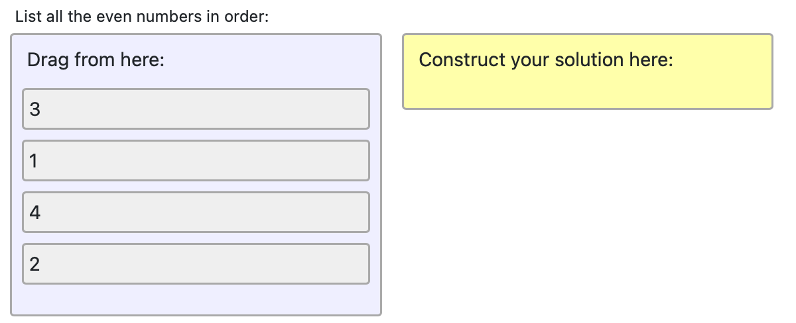

PrairieLearn now has a new pl-order-blocks element, thanks to the collaborative efforts of
Jesse Wong (University of British Columbia) and
Zander Xu (University of Illinois at Urbana-Champaign), with input from
Nicolas Nytko,
Seth Poulsen,
Andrew Stec,
Nathaniel Weinman,
and Tim Yang.
This element can be used to select arrange blocks from a given list to construct a solution. It has many applications, including Parsons Problems, where students arrange blocks of scrambled code. Our source code was inspired by the the Parsons Problem implementation in js-parsons.

Each block is specified in the question.html similarly to the pl-multiple-choice element. The code that
generates the above question is:
List all the even numbers in order:
<pl-order-blocks answers-name="order-numbers">
<pl-answer correct="false">1</pl-answer>
<pl-answer correct="true" >2</pl-answer>
<pl-answer correct="false">3</pl-answer>
<pl-answer correct="true" >4</pl-answer>
</pl-order-blocks>
This element can be used in combination with the external grader when using the grading-method="external" attribute. In this case,
the blocks moved to the solution area will be saved in the file `user_code.py`, and the correctness of the code will be checked using the external grader, as illustrated in this
other example.
Write the function my_dot_product:
<pl-order-blocks answers-name="coding" grading-method="external" indentation="true">
<pl-answer>def my_dot_product(a,b): </pl-answer>
<pl-answer>return d </pl-answer>
<pl-answer>return </pl-answer>
<pl-answer>d = a*b </pl-answer>
<pl-answer>d = a@b </pl-answer>
<pl-answer>d = a.T@b </pl-answer>
<pl-answer>d = np.inner(a,b) </pl-answer>
<pl-answer>d = np.outer(a,b) </pl-answer>
</pl-order-blocks>
For more information, see the pl-order-block documentation.